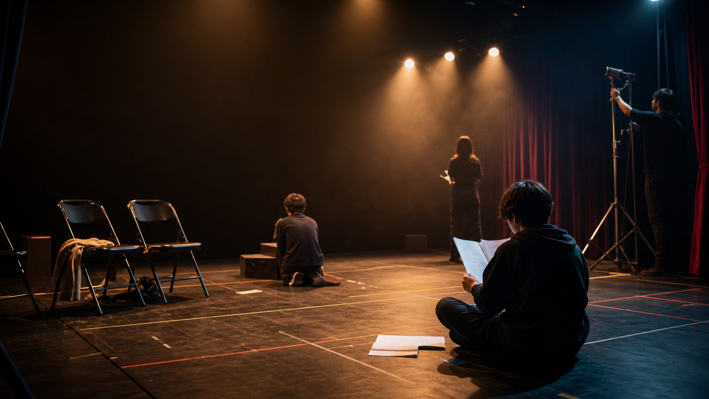

夏季試演会「境界線の椅子」
7月19日、学生会館小ホール。予約不要、入退場自由。

7月19日、学生会館小ホール。予約不要、入退場自由。
記事はNotionの指定データベースから同期する想定の構成。
凝った表示はフロント側で固定し、更新作業は表への入力に閉じる。
演劇同好会は、演劇経験の有無を問わず、企画、脚本、演出、出演、舞台技術を横断して試すための場所である。
年2回の本公演と、短編を試す試演会を軸に活動する。脚本会議から小屋入りまでを部員で分担し、舞台制作の全工程を経験する。
サイトは静的フロントエンドとCMSデータの分離を前提に設計する。見た目は自由に作り込み、日常更新はNotionの表入力へ寄せる。
Notionの「公演」データベースを想定したカード表示。日付、会場、状態だけを入力すれば反映できる。
ブログはカテゴリで絞り込める。後輩の入力項目は、タイトル、日付、カテゴリ、本文、公開チェックだけで足りる。
記事と公演情報は団体用Notionのデータベースで管理。
Next.jsやAstroが公開済みデータだけを取得。
Vercel、Netlify、GitHub Pagesで維持費を抑える。
見学は毎週水曜と金曜。演技、照明、音響、衣装、広報、脚本のどこからでも参加できる。